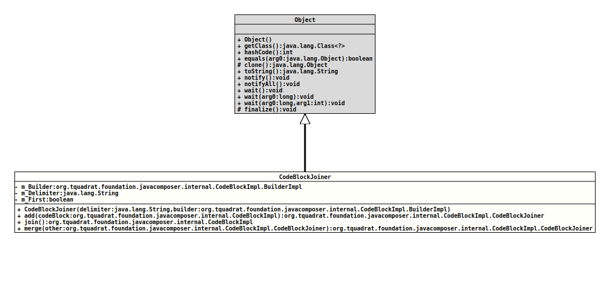

Class CodeBlockImpl.CodeBlockJoiner
java.lang.Object
org.tquadrat.foundation.javacomposer.internal.CodeBlockImpl.CodeBlockJoiner
- Enclosing class:
CodeBlockImpl
@ClassVersion(sourceVersion="$Id: CodeBlockImpl.java 1085 2024-01-05 16:23:28Z tquadrat $")
@API(status=INTERNAL,
since="0.0.5")
private static final class CodeBlockImpl.CodeBlockJoiner
extends Object
A helper class that supports to join code blocks.
- Author:
- Thomas Thrien - thomas.thrien@tquadrat.org
- Version:
- $Id: CodeBlockImpl.java 1085 2024-01-05 16:23:28Z tquadrat $
- Since:
- 0.0.5
- UML Diagram
-

UML Diagram for "org.tquadrat.foundation.javacomposer.internal.CodeBlockImpl.CodeBlockJoiner"
{kind=link}
-
Field Summary
FieldsModifier and TypeFieldDescriptionprivate final CodeBlockImpl.BuilderImplThe builder that is used to deliver the final code block.private final StringThe separator for the joined code blocks.private booleanFlag that indicates whether to add the delimiter on adding a new code block. -
Constructor Summary
ConstructorsConstructorDescriptionCodeBlockJoiner(String delimiter, CodeBlockImpl.BuilderImpl builder) Creates a newCodeBlockJoinerinstance. -
Method Summary
Modifier and TypeMethodDescriptionadd(CodeBlockImpl codeBlock) Adds another code block.final CodeBlockImpljoin()Returns the new code block with the joined ones.Merges this code block joiner with the given other one.
-
Field Details
-
m_Builder
The builder that is used to deliver the final code block. -
m_Delimiter
The separator for the joined code blocks. -
m_First
Flag that indicates whether to add the delimiter on adding a new code block.
-
-
Constructor Details
-
CodeBlockJoiner
Creates a newCodeBlockJoinerinstance.- Parameters:
delimiter- The separator for the joined code blocks.builder- The builder that is used to deliver the final code block.
-
-
Method Details
-
add
Adds another code block.- Parameters:
codeBlock- The new code block.- Returns:
- This
CodeBlockJoinerinstance.
-
join
Returns the new code block with the joined ones.- Returns:
- The new code block.
-
merge
Merges this code block joiner with the given other one.- Parameters:
other- The other code block joiner.- Returns:
- This
CodeBlockJoinerinstance.
-